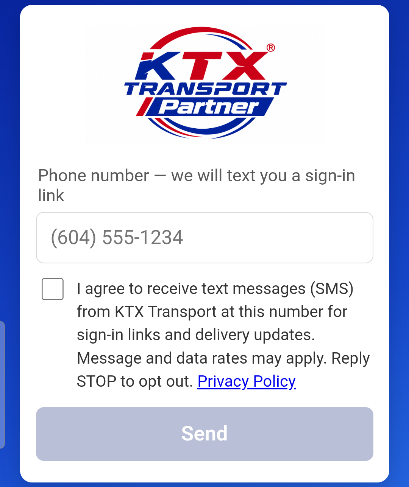

Open Chrome on your phone and type the app download address from the cover page.
If KTX sent you the link by text or message, just tap the link.
For Android phones · takes about 5 minutes
Open Chrome on your phone and type the app download address from the cover page.
If KTX sent you the link by text or message, just tap the link.
If you see "File might be harmful", tap Download anyway.
When the download finishes, tap Open at the bottom of the screen.
Missed it? Swipe down from the top of the screen and tap ktx-driver-….apk in the notifications.
If you see "For your security, your phone is not allowed to install unknown apps from this source", tap Settings.
(If this message does not appear, go to step 3.)
On the Chrome page, turn on the switch (Allow from this source or Allow permission).
Then press your phone's Back.
When asked "Do you want to install this app?", tap Install.
When it is installed, tap Open.
Next time, just tap the KTX Driver icon on your home screen.
The first time you open the app you see "Set up KTX Driver". These settings keep your location sending while you drive, so please allow all of them.
Tap Allow.
Then answer the windows that follow, in this order.
In the location window, tap While using the app.
On the next screen choose Allow all the time, then press Back.
In the notifications window, tap Allow.
You will then see "KTX: Sending location" while your location is being sent.
In the battery window ("Stop optimizing battery usage?" or "Let app always run in background?"), tap OK or Allow.
On the KTX Driver "Install unknown apps" page, turn on the switch, then press Back.
This lets you install new versions right inside the app later.
When every item has a green ✓, tap Start.
Enter your phone number.
Tick the box to agree to text messages and tap Send.

A text from KTX Transport arrives. Tap the link in it.
The KTX Driver app opens and signs you in. If you see a Continue button, tap it.
Open the app, tap PICK UP and scan the freight (or type the order number).
When the pickup is done, location sending starts by itself and "KTX: Sending location" appears at the top of the screen.
While driving there is nothing else to do. You can turn the screen off and use other apps such as maps or phone.
After you deliver your last load, location sending stops by itself and the notification disappears.
When a new version is out, the app tells you when you open it. You do not need the Play Store.
In the "New version" window, tap Update.
Busy? Tap "Later" — it will remind you again.
After a short download, when asked "Do you want to update this app?", tap Update.
| I see "Can't connect" | Check your internet and tap Try again. If it does not work on Wi-Fi, turn Wi-Fi off and use mobile data. |
|---|---|
| The text link opens in Chrome | Settings → Apps → KTX Driver → Set as default (Open by default) → turn on Open supported links and tick all links. Then tap the text link again. |
| After pickup there is no "KTX: Sending location" | Settings → Apps → KTX Driver → Permissions: Location: Allow all the time and Notifications: Allowed. Then open the app once; sending starts again. |
| My location sometimes stops while driving | Settings → Apps → KTX Driver → Battery → Unrestricted. On Samsung phones also check Settings → Battery → Background usage limits and make sure KTX Driver is not in a sleeping list. |
| "App not installed" | Make sure the phone has free storage. If an older KTX Driver is on the phone, uninstall it and install again (you will need to sign in again). |
| What Android version do I have? | Settings → About phone → Software information → Android version. Below 8.0 cannot install the app. |
Contact: